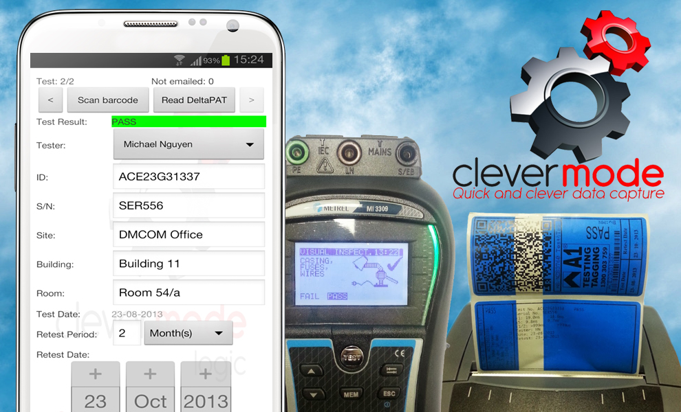
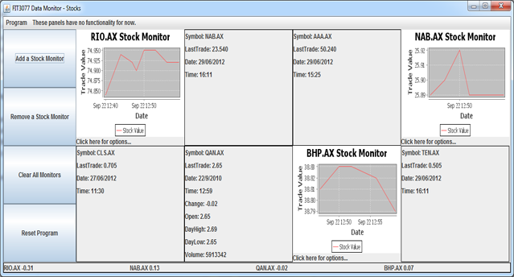
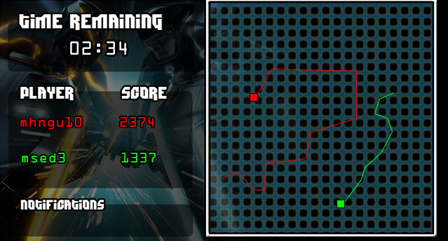
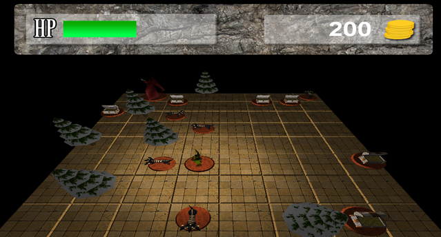

Clevermode is a software and hardware package designed to revolutionise the the Australian Portable Appliance Test and Tagging industry. Run on industrial-grade Android tablets, it provides an easy but powerful tool for fast data entry, collection, printing and reporting through its extensive and appropriate use of QR-Codes. By communicating with a variety of devices and third-party software, it can drastically reduce the time spent performing tests and logging reports without disrupting the workflow that testers are accustomed to.
I was the developer of the Android software component of Clevermode for A1 Testing & Tagging in conjunction with DMCOM. It was featured at the National Manufacturing Week 2013 and Safety in Action Exhibition 2013.
More information about it can be found over here.

An Australian Stock Exchange monitor written in Java that retrieves and displays stock information in both a real-time and time-lapsed form. The focus of the software was to design and implement a robust, modular and extendable software architecture that could easily add and remove features. It connects to a web service provided by David Squire of Monash University. It was developed in partnership with a friend, Mark Sedrak.

An agent-based biological simulation of bumblebees and their different harvesting techniques. With their environment as the varying parameter, this model aims to discover which combination of strategies yield the greatest results for the hive. This simulation and its accompanying report was awarded Monash University's Top of Class for the Computer Science Project in Semester 1, 2012.

GPSTron is an adaption of the Tron Lightcycle game for Android devices which uses GPS navigation for in-game movement. Specifically, it uses XMPP for network communication, JSON for object serialisation and connects to a private server provided by Robert Merkel of Monash University. It was developed in partnership with a friend, Mark Sedrak. It will not be released on the Play Store.

A simple tile-based RPG written in C++ and DirectX. Who doesn't love tile-based RPGs written in C++ and DirectX!?

A simple 3D version of Yahtzee! written in C++ and DirectX. Who doesn't love Yahtzee!?